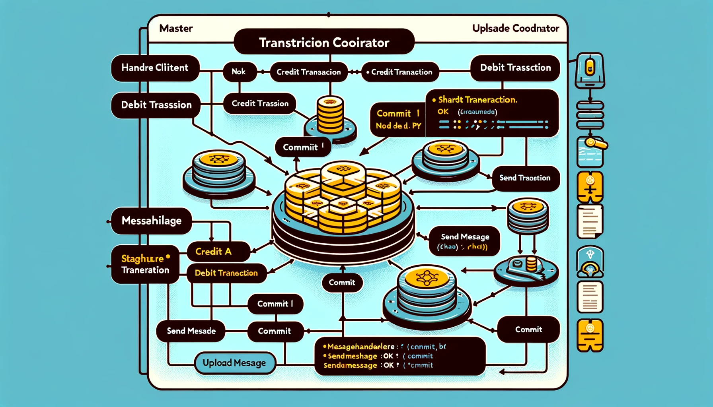
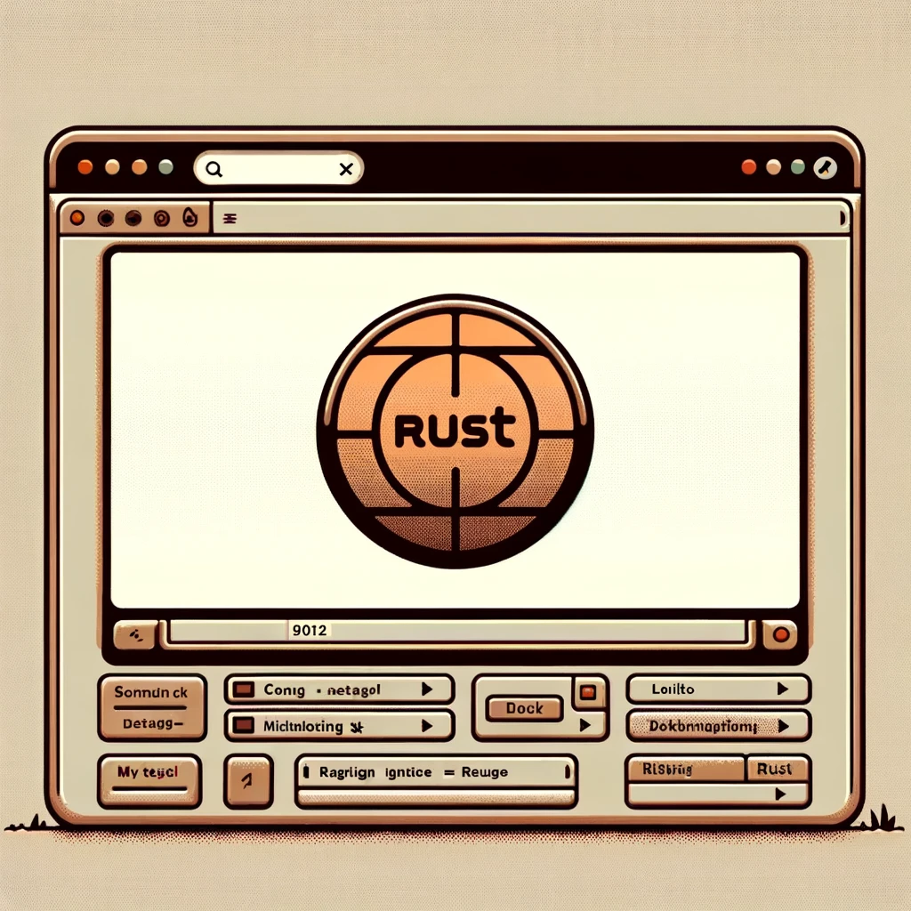
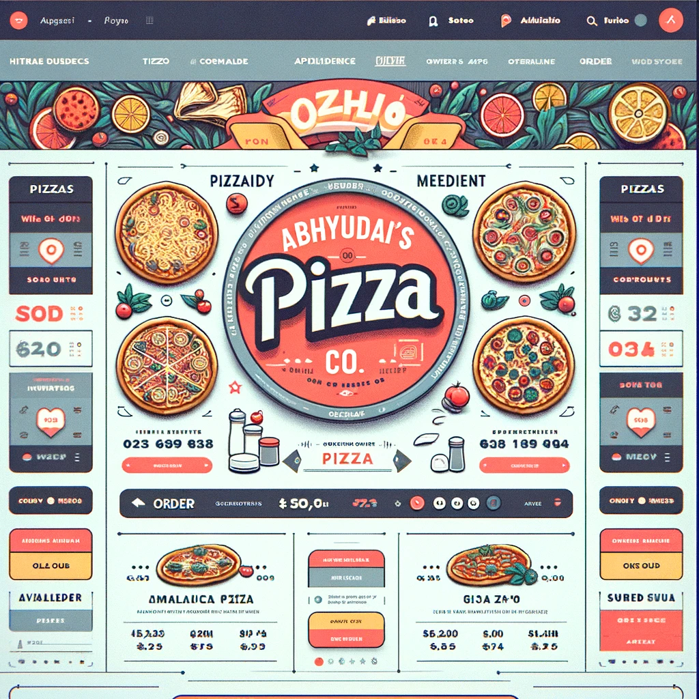
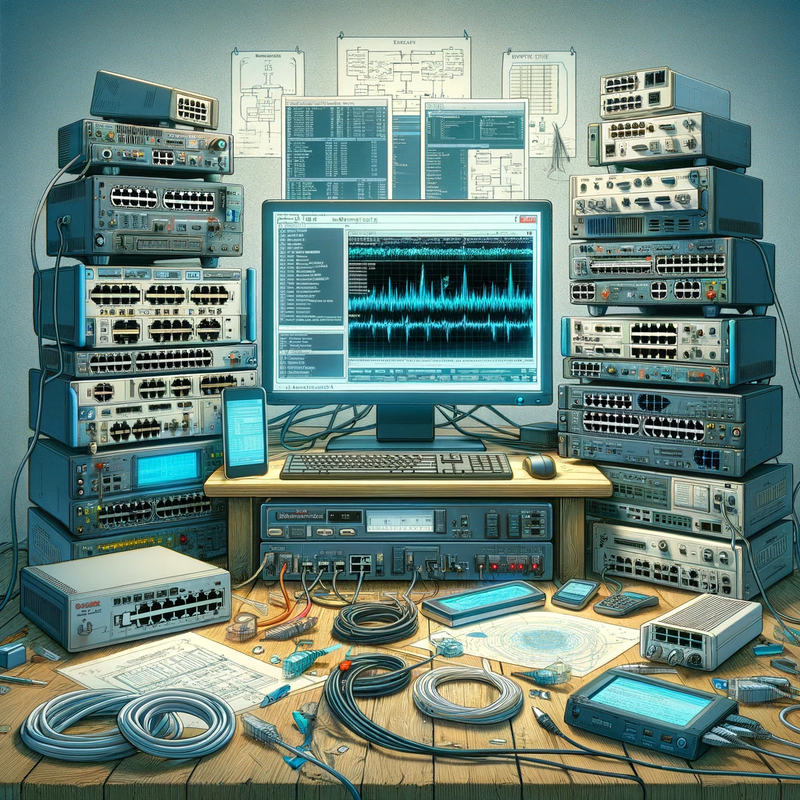

Two-Phase Commit Protocol
Implementation and demo of the 2PC consensus workflow for distributed transactions.
Selected work across systems, networking, and web apps. Each card links to the repo.

Implementation and demo of the 2PC consensus workflow for distributed transactions.
Scraping pipeline with structured extraction and basic rate-limiting.
Connect-4 with board logic and simple AI heuristics.
Listing app foundation with CRUD flows and search.
Auth-gated services with shared utilities and middleware.
Validate payloads via MD5 checksum headers for integrity checks.
Network routing simulation with a distance-vector algorithm over sockets.
Simple tracker—state updates and persistence prototype.
Locking/authorization primitives exploration for service endpoints.
Fixed-region memory allocator for fast allocations/deallocations.
Command-line calculator parsing expressions and producing results.

Starter web app using a Rust web framework with routing and handlers.

Frontend UI to browse menu items and add selections.
Explorations in relational data modeling and queries.

Packet capture analysis and protocol inspection write-ups.